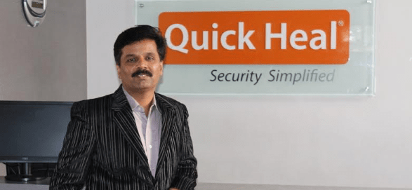

Born in a small village at Rahimatpur in Maharashtra, Kailash Katkar worked his
way to the top to be chairman and CEO of INR 200 Cr business.He
is the man behind Quickheal technologies Pvt Ltd.
He
started with a job at local radio and calculator repair shop and later went
ahead in 1990 to start his own calculator repair business. In 1993 he started a
new venture, CAT computer services where around that time his younger brother
Sanjay developed a basic model of antivirus software which helped in solving the
biggest problem of computer maintenance at that time.
Later in 2007 it was
renamed as Quick Heal Technologies. He achieved all this without any formal
education